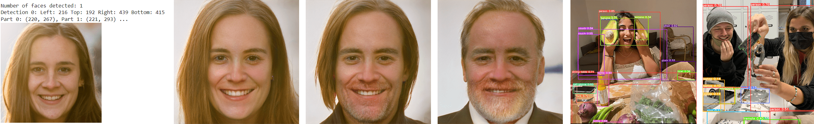
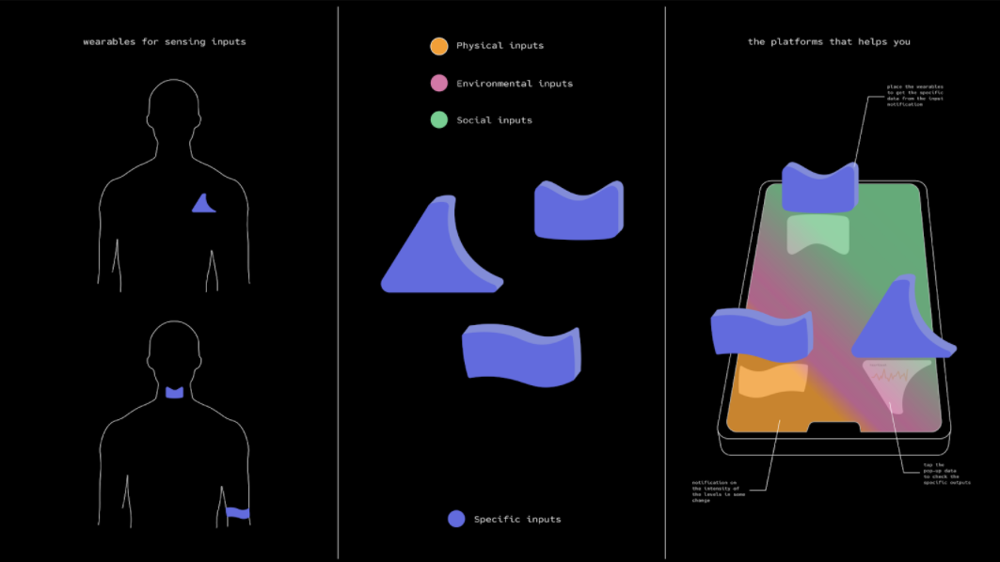

This week was really interesting, but also scary how you can easily modify and generate pictures. The technic is already so far. For me this week open up the possibilities to design different kind of image date. Its possible to show the evolution of a city or the climate change. Also you can show all images for example of animals which look very similar to each other and make a overflow to show the similarity. Also you can change a 2D painting into a 3D video, while connecting it with your movements. In the end I would have liked to learn a bid about VR/AR to understand more and be able to create new ideas with it.
It was the second time of the event called “Xarxa Night”. Roberto organises this event in our MDEF classroom at IAAC in Poblenau to give everyone a chance to present something that you like or that you are interested in and want to share it with others. Last time Roberto told us about mushrooms and this time Busi talked about female dj´s and Didac about his favourite area in Spain called Catalynia.
The week we explore the world of machine learning. We made different exercises, like modifying our pictures. We could use machine/tools, which think, create and see on their own. It starts with chess computers. Machine learning means: automatic tasks by providing examples (training data) instead of writing instructions (code), for example for recognising products in pictures, what you can see on right. They learn It from examples and not from instructions. Also you can use deep-learning, this works with neural networks , where the different types depends on: internal functioning, what kind of data, what tasks you want tot automate and specific models. Also you have different typologies of deep learning like: Image classification, emotion detection, object/voice recognition, image/natural language processing, image/text/ voice generation and time series prediction. Every deep learning and machine learning algorithms are part of artificial intelligence. For a good evaluation you need a large amount of data and homogeneity and heterogeneity dataset. You can have bias in your datasets like: sample, exclusion, measurement, recall, observer, racial or association bias. --> Estampa Website
The first task was to run a neural network, while uploading an image with different kind of items and process them with the detect.py script that comes with the network. The results you can see in the two right pictures, where the items have been recognized like: persons, vases, laptops, sink and books. For the second task we first checked the computer capacity. Then we install all the required libraries and uploaded a picture of ourselves, what you can see on the right. Then we try to find ourselves in the latent space, which generates the image that I more similar to the portrait in 1000 steps. It was really interesting to see how close the generated image looked like compared to the uploaded one. The next step was to modify ourselves inside the latent space, change factors, like female/male, smiling or looking serious. The third task we sended our last 100 pictures from our phones to the teachers, so in total we had around 3000 pictures. The programm could recognise the pictures and could coordinate similar pictures together, like pictures related to food or forests and so on. --> 3000 images data
This task was about creating a robot or a technical device which analyses and creates data. We thought about persons who are struggling to know what problems/issues they have and who are feeling stressed because of it. It includes personal and physical issues. So we thought about a device which tracks physical (Frequency of voice, Eyes strain, Heartbeat, Body temperature, Blood oxygen, Hydratation, Digestion, Alternative data we could use as an input: Brain activity), social (Social media activity, Time spent with people, News / Potential stress factors, Music listened to (Spotify)) and environmental (Outside / Inside, Temperature, Air quality, Noise Frequency, Level of light and Kelvin temperature) input. We thought about a set of devices for different parts of the body to get the good quantity and quality of data. So put your devices on the phone to get the different auras, which includes forms, colours and maybe noises. The Name is after the psychologist Sigmund Freud: Freud and the E , so freude means happiness and that’s our wellbeing analyst, which helps you to understand reasons of your current state and show you opportunities for feeling better.
About ethics you can say, you have positive and negative. Negative impacts could be: Creating anxiety, Too much focus on tech, Even more screen time, Trust less your personal feeling, Many wearable devices, Invading personal space and Errors in interpretation could have an impact on your health. Positive impacts could be Makes you calm when you feel stressed about your health, Calming colors, Calming data visualization based on color gradients, Suggests opportunities to feel better and gives you autonomy in understanding your health state (possibility to dive deeper in the data if you want to).
The confusion matrix is devided by four sections: true positive, false negative, false positive and true negative. True positive could be: Tracking moods according to the real person state. People feel understood. The machine says you are feeling well and this is true! False negative could be: People feel confused about their emotional state. The machine says you are feeling bad while you are in perfect health. False positive: People feel confused about their emotional state. Stress and lonely feelings. The machine says you are feeling well but you are in the worst moment of your life. True negative: Tracking moods according to the real person state. People feel understood. Giving correct opportunities to feel better. The machine says you are not feeling well and this is true. Outputs for this device could be the influences and levels of reaching a mental and physical state, insights on changing habits before a problem could happen, notifications on a problem or change in your body need to be addressed, the data that was sourced to make you aware of a problem and abstract representation of data helps with data anxiety.
This week we should think about a concept to create a dataset. We had different kind of ideas like: “Understanding the connection between our different spotify “auras” and creating a collective aura of our group”, “Having the AI output a “club” experience based on images and sound from a club: what an AI thinks a party looks/sounds like”, “Connecting different historical events in a network instead of just seeing them in a timeline thanks to the state of art of our education systems (ex.: Anne Frank-Martin Luther King) (machine learning) Pantheon” and “Having a climate impact experience: seeing the old world, the actual world and how the world could look like when we are not stopping the climate change (examples as it has been done, like this climat not does exist)”. In the end we focused on: Associating artistic movements with music at the time - then Machine Learning outputs new prediction for future. The project has a creative approach that is speculative of the future. The dataset would consist of various artistic movements and the music contemporary to that period in time. With the goal to observe and understand how popular music and art styles have evolved together throughout time, and predict what that might look like in the future. We would need to create a new dataset because there is no one similar existing. So we gather pictures of specific art movements throughout time and the musical movements which accompanied them. Datasets could be sourced from worldwide museum art existing libraries and archives of historical art pieces. We were talking about the different art-epoches: Ancient Art, Renaissance, Gothic, Baroque, rococo, Classism, Romanticism, Monumentalism , impressionism, Art nouveau, Art deco, Realism, Modernism, Symbolism, Cubism, surrealism, dada and pop art.